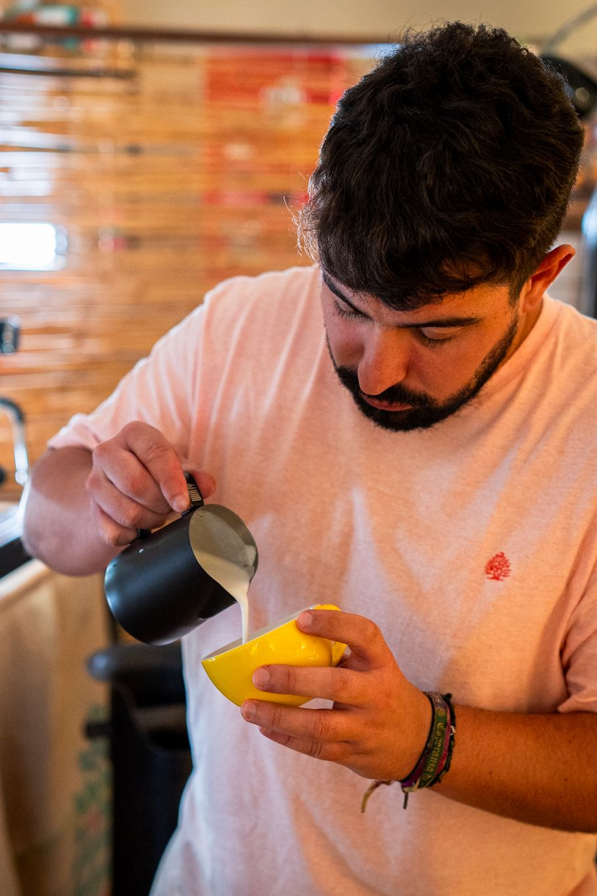

Versión vaso alto: cuándo te compensa y cuándo no
Se elige en el momento de la compra, no se cambia después. Qué gana y qué pierde una barra al pedir la máquina con más hueco bajo el grupo.
Decisiones técnicas, mantenimiento y criterios de compra contados por quienes ensamblan cada máquina en Valencia. Sin marketing de catálogo: lo que de verdad cambia la taza y el día a día de una barra.

No es una cuestión de tamaño de local, sino de cuántos cafés seguidos tienes que servir sin que la caldera se quede corta. Te contamos el criterio que usamos en el taller cuando nos llaman para decidir.
Se elige en el momento de la compra, no se cambia después. Qué gana y qué pierde una barra al pedir la máquina con más hueco bajo el grupo.

Diseñar para reparar cambia decisiones concretas de montaje: acceso a componentes, piezas estándar y documentación. Cuesta más y dura mucho más.

Control por sonda y tecnología PID, gestionado desde la botonera y visible en el display. Qué significa eso cuando encadenas cuarenta cafés.

El proceso está integrado en la máquina, pero conviene entender qué hace en cada fase para no saltarse lo que de verdad protege el grupo.

Diseñamos el grupo en casa por una razón: la cámara de preinfusión y la posibilidad de cambiar de ducha según el café que sirves.

Purga ajustable de 2 a 6 segundos, control de eficiencia energética y encendido programado con dos días de descanso a la semana.
Novedades del taller, mantenimiento y lanzamientos. Nada más.